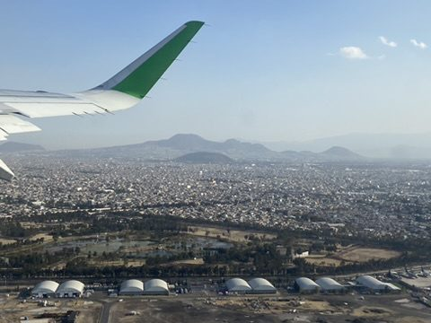
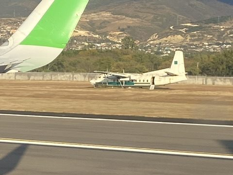
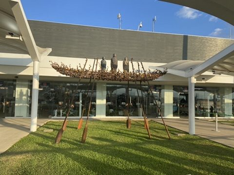
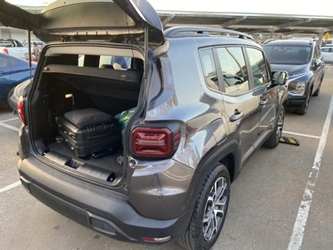
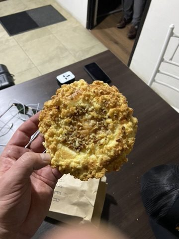

Heading south: Onward flight to Oaxaca, about an hour to the south-east. Below us Mexico City as far as the eye can see, framed by volcanic mountains.


Arrival in Oaxaca: The small airport lies in the valley between the mountains of the Sierra Madre del Sur. Pick up the rental car, load the bags, head to the historic centre. Oaxaca is considered Mexico's culinary capital – home of mole, mezcal and tlayudas.



First snack in Oaxaca.